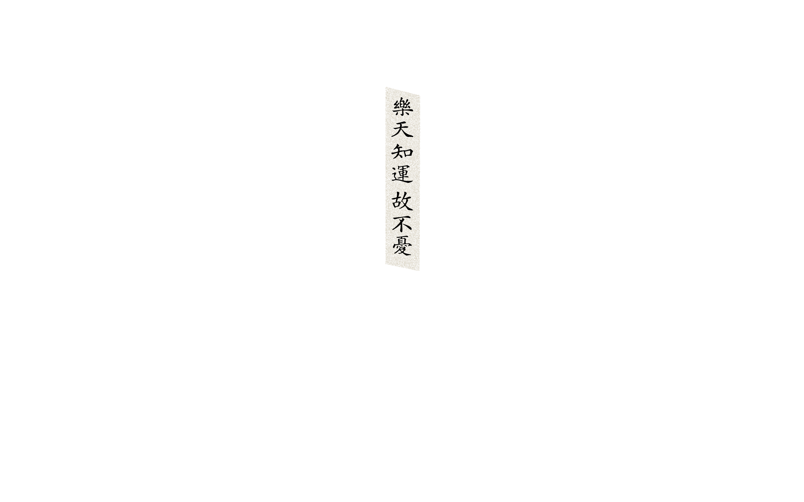

ElementaWall is an app that creates personalized monthly fortune wallpapers based on your BaZi (Four Pillars) birth chart. Users can browse, select, and download wallpapers matched to their chart.
ElementaWall 根據生辰八字，為你定制每月運勢背景圖，並提供個人化背景圖推薦與下載。
Sign in with Google or email to save your profiles, sync wallpaper history, and manage your account. When you use Google Sign-In, ElementaWall requests basic profile and email information only to create and authenticate your account; we do not use Google user data for advertising.
使用 Google 或郵箱登入後，可保存八字檔案、同步背景圖記錄並管理帳號。透過 Google 登入時，ElementaWall 僅請求基本資料與電子郵件用於建立與驗證帳號，不會將 Google 用戶資料用於廣告。
Privacy Policy / 用戶服務與隱私協議 · About ElementaWall / 關於我們 · Contact / 聯絡我們
依八字排盤 推演本月大運流轉 以喜用為補 定制專屬運勢背景圖